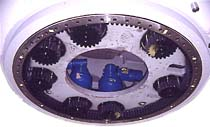
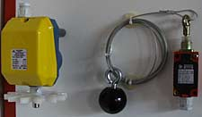

The Wind
Turbine Yaw Mechanism
The Wind
Turbine Yaw Mechanism
The wind turbine yaw mechanism is used to turn the wind turbine rotor against the wind.
Yaw
Error
The wind turbine is said to have a yaw error, if the rotor
is not perpendicular to the wind. A yaw error implies that a
lower share of the energy in the wind will be running through
the rotor area. (The share will drop to the cosine of the yaw
error, for those of you who know math).
 If this were the only thing that happened,
then yaw control would be an excellent way of controlling
the power input to the wind turbine rotor. That part of the
rotor which is closest to the source direction of the wind, however,
will be subject to a larger force (bending torque) than the rest
of the rotor. On the one hand, this means that the rotor will
have a tendency to yaw against the wind automatically, regardless
of whether we are dealing with an upwind
or a downwind turbine. On the other hand, it means that the
blades will be bending back and forth in a flapwise direction
for each turn of the rotor. Wind turbines which are running with
a yaw error are therefore subject to larger fatigue
loads than wind turbines which are yawed in a perpendicular
direction against the wind.
If this were the only thing that happened,
then yaw control would be an excellent way of controlling
the power input to the wind turbine rotor. That part of the
rotor which is closest to the source direction of the wind, however,
will be subject to a larger force (bending torque) than the rest
of the rotor. On the one hand, this means that the rotor will
have a tendency to yaw against the wind automatically, regardless
of whether we are dealing with an upwind
or a downwind turbine. On the other hand, it means that the
blades will be bending back and forth in a flapwise direction
for each turn of the rotor. Wind turbines which are running with
a yaw error are therefore subject to larger fatigue
loads than wind turbines which are yawed in a perpendicular
direction against the wind.
Photograph
© 1998 Soren Krohn
Yaw
Mechanism
 Almost
all horizontal axis wind turbines
use forced yawing, i.e. they use a mechanism which uses
electric motors and gearboxes to keep the turbine yawed against
the wind.
Almost
all horizontal axis wind turbines
use forced yawing, i.e. they use a mechanism which uses
electric motors and gearboxes to keep the turbine yawed against
the wind.
 The image shows the yaw mechanism of a typical
750 kW machine seen from below, looking into the nacelle. We
can see the yaw bearing around the outer edge, and the
wheels from the yaw motors and the yaw brakes inside.
Almost all manufacturers of upwind machines prefer to brake the
yaw mechanism whenever it is unused. The yaw mechanism is activated
by the electronic controller which several times per second checks
the position of the wind vane
on the turbine, whenever the turbine is running.
The image shows the yaw mechanism of a typical
750 kW machine seen from below, looking into the nacelle. We
can see the yaw bearing around the outer edge, and the
wheels from the yaw motors and the yaw brakes inside.
Almost all manufacturers of upwind machines prefer to brake the
yaw mechanism whenever it is unused. The yaw mechanism is activated
by the electronic controller which several times per second checks
the position of the wind vane
on the turbine, whenever the turbine is running.
Cable
Twist Counter
 Cables carry the current from the wind turbine generator down
through the tower. The cables, however, will become more and
more twisted if the turbine by accident keeps yawing in the same
direction for a long time. The wind turbine is therefore equipped
with a cable twist counter which tells the controller
that it is time to untwist the cables.
Cables carry the current from the wind turbine generator down
through the tower. The cables, however, will become more and
more twisted if the turbine by accident keeps yawing in the same
direction for a long time. The wind turbine is therefore equipped
with a cable twist counter which tells the controller
that it is time to untwist the cables.
 Occasionally you may therefore see a wind
turbine which looks like it has gone berserk, yawing continuously
in one direction for five revolutions.
Occasionally you may therefore see a wind
turbine which looks like it has gone berserk, yawing continuously
in one direction for five revolutions.
 Like other safety equipment in the turbine
there is redundancy in the system. In this case the turbine is
also equipped with a pull switch which is activated if the cables
become too twisted.
Like other safety equipment in the turbine
there is redundancy in the system. In this case the turbine is
also equipped with a pull switch which is activated if the cables
become too twisted.

|
Back | Home
| Forward |
© Copyright 1999 Soren Krohn.
All rights reserved.
Updated 6 August 2000
http://www.windpower.org/tour/wtrb/yaw.htm